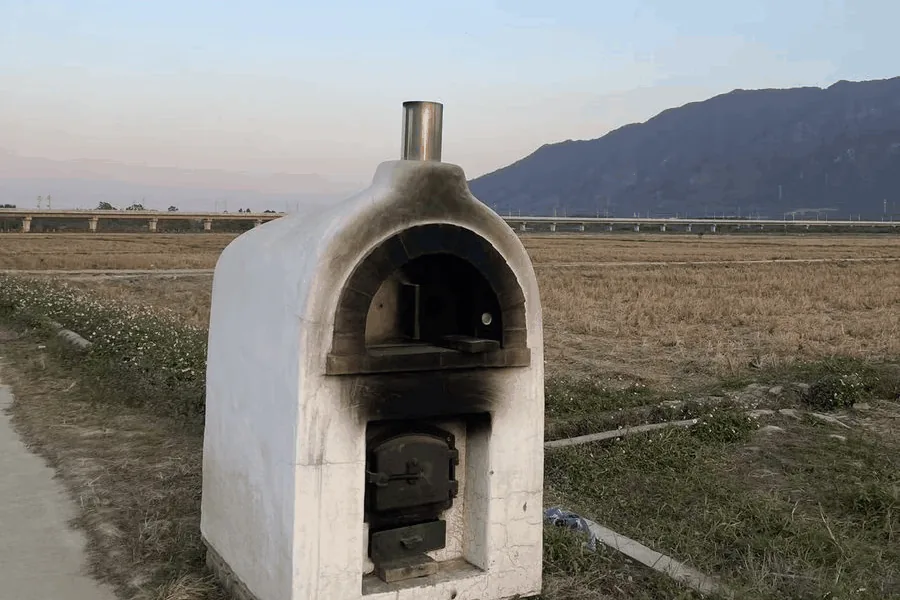
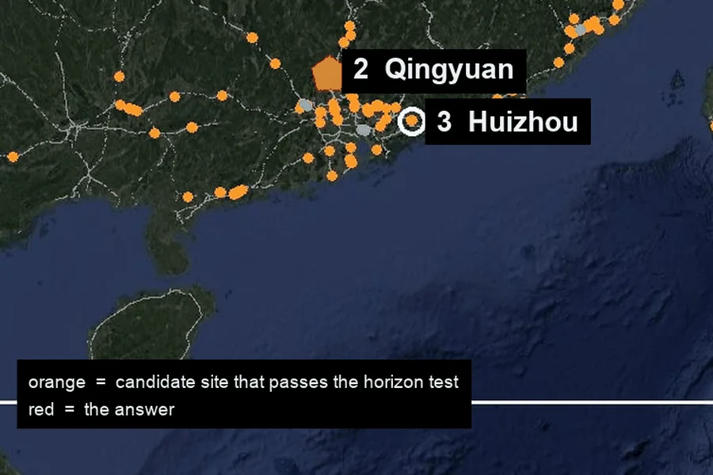
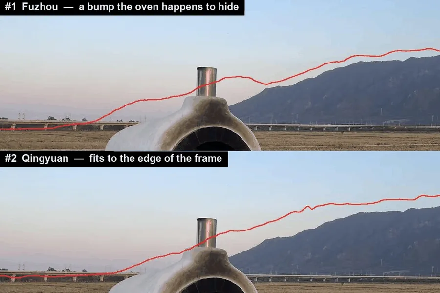
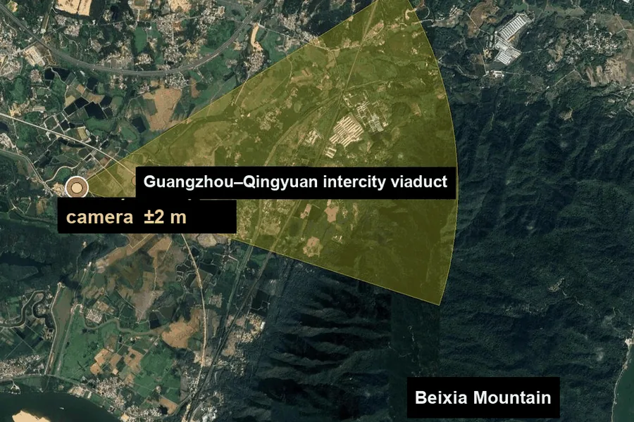

Read the photo. Catenary masts on the viaduct mean an electrified railway, the mountain is about 3 km away, and the rice is harvested while the grass is still green. South China, as a bet, not a proof.读图。高架上的杆子是接触网支柱，说明是电气化铁路；陡峭的山在约 3 公里外；稻子已收割，草还绿着。先押华南，是判断，不是证明。
Region scan. Every railway bridge in the region from OpenStreetMap, 27,335 segments, with a 360° horizon computed every 400 m. 171 sites have flat ground nearby, a clear mountain within a few km and a flat horizon beside it.区域扫描。从 OpenStreetMap 取出区域内所有铁路桥，共 27,335 段，每 400 米用高程数据算一次 360° 地平线。附近平坦、几公里内有明显山峰、旁边地平线平坦的，只剩 171 处。
Skyline fit. 14,372 camera positions, each rendered with the ridge line it would see, leave 22. The top three are drawn back onto the photo: #1 only scored well because the oven hides a bump; #2, Qingyuan, fits from the foot of the mountain to the edge of the frame.天际线拟合。14,372 个候选机位各自渲染出能看到的山脊线，剩下 22 个。前三名画回照片核对：第一名的凸起正好藏在烤炉后面；第二名清远从山脚到画面边缘都贴合。
Pier count. The 17 piers in the photo become 17 bearings from the camera, and where they meet the railway the intersections must be evenly spaced. One spot is left: ±2 m, with the direction the camera faced.数桥墩。照片里 17 根桥墩变成从机位出发的 17 条方位线，它们和铁路线的交点必须间距均匀。最后只剩一个点：误差 ±2 米，朝向也一并给出。
Agent skill · Python · MITAgent skill · Python · MIT 协议
geo-sleuth
Finds where a photo was taken, and shows its work. When there is no sign, plate or landmark to read, OpenStreetMap geometry, elevation data, satellite tiles and street view carry the search. Every conclusion points at the command that produced it.
找出一张照片是在哪儿拍的，并把推理过程摊开给你看。照片里没有招牌、车牌、地标可读时，就靠 OpenStreetMap 几何、高程数据、卫星图和街景来搜。每个结论都指向产出它的那条命令。
Candidates left after each step, from every railway bridge in the region to one camera position.
每一步之后剩下的候选：从区域内所有铁路桥，一直收窄到一个相机位置。
npx skills add Oldcircle/geo-sleuthWorks with Claude Code, Codex, Cursor, Gemini CLI, OpenCode and GitHub Copilot.支持 Claude Code、Codex、Cursor、Gemini CLI、OpenCode 和 GitHub Copilot。